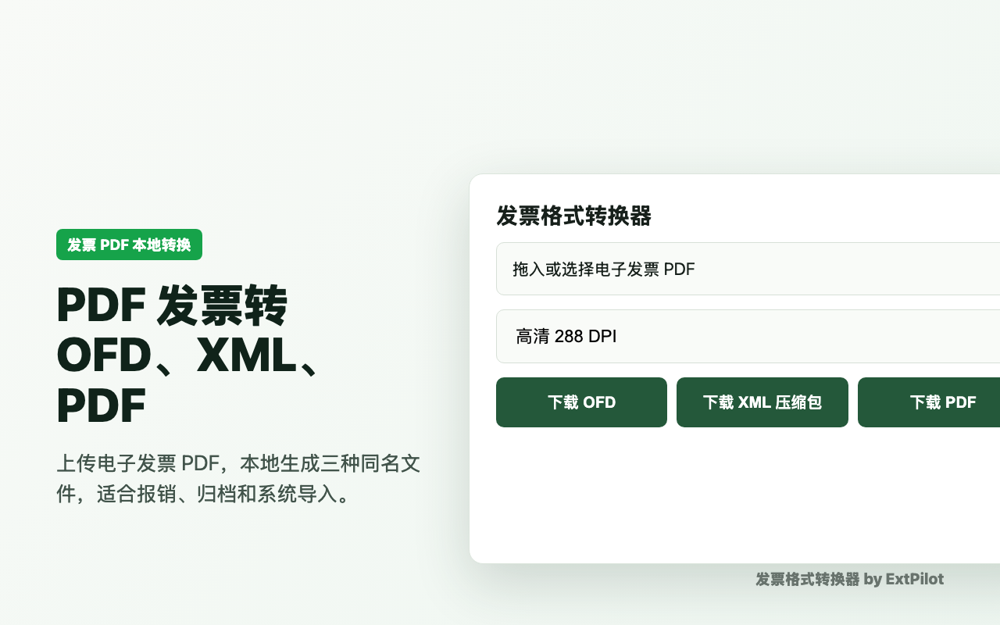
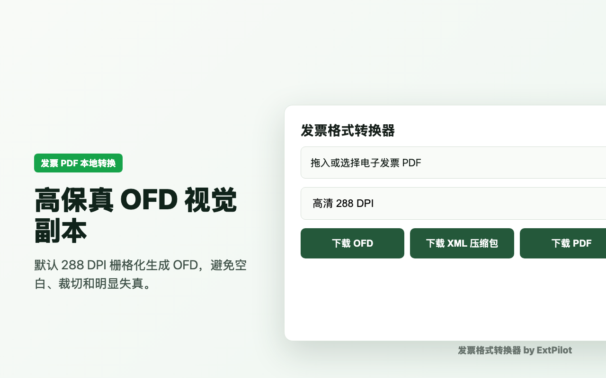
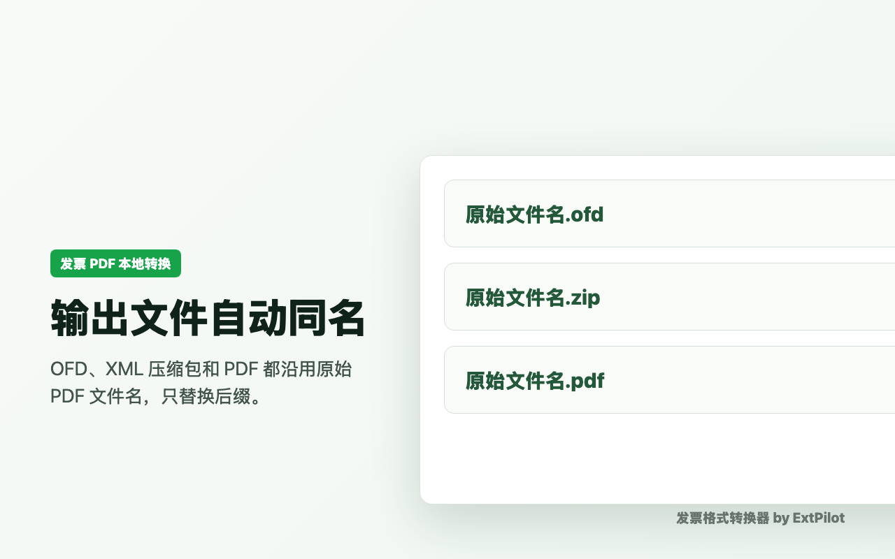
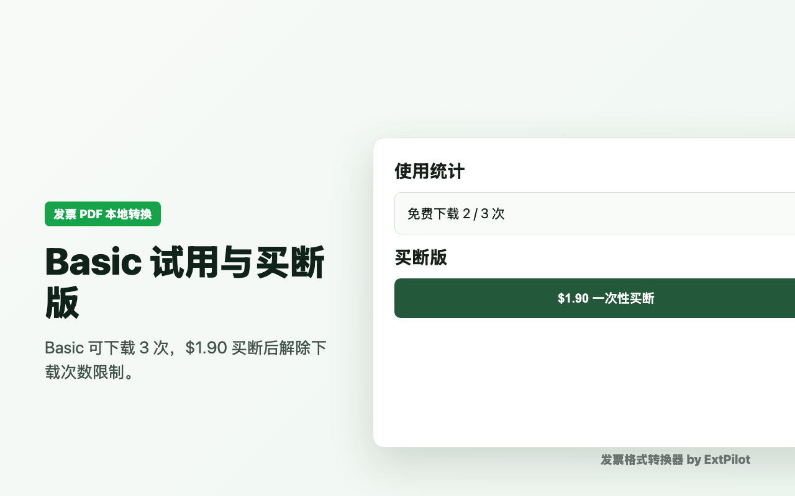
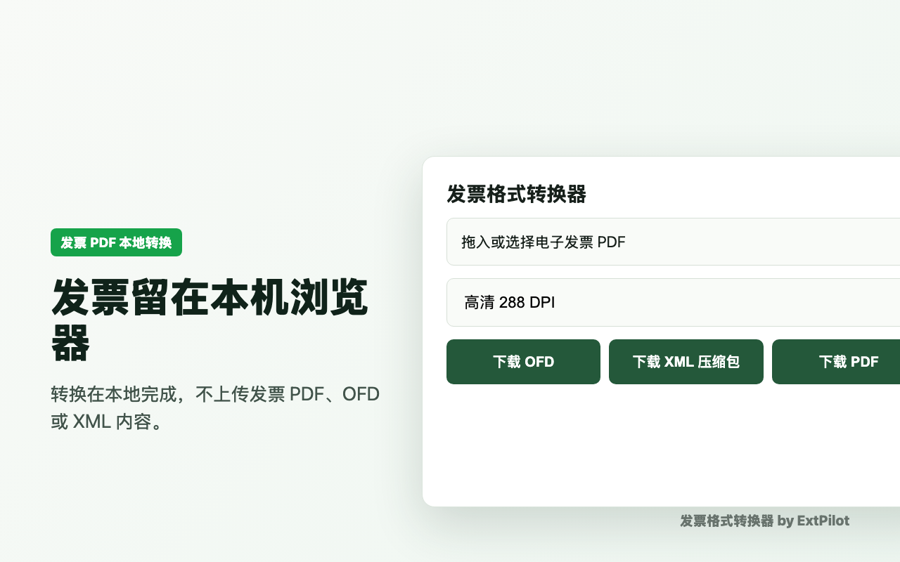

如何把电子发票 PDF 转成 OFD、XML 压缩包和 PDF
为什么需要转换
很多报销、归档和系统导入流程不只接受 PDF。财务人员可能需要 OFD 用于归档，需要 XML 压缩包用于导入或校验，也需要保留原 PDF。手动整理文件名和格式很容易出错，所以这个插件把三种输出集中在一个本地流程中。
这个流程适合财务、行政、人事、个体工商户和需要整理供应商票据的团队。它解决的是格式整理问题：把已经收到的 PDF 发票整理成更容易交付、归档和导入的文件包。它不负责恢复税局原始签章文件，也不替代验真、查重或报销系统里的审核规则。
三种输出有什么区别
OFD 用于和国内电子发票归档流程对齐。插件生成的是视觉副本：把 PDF 页面渲染为高 DPI 图片并写入 OFD，优先保持页面外观一致。
XML 压缩包 用于字段导入和机器处理。插件会解析 PDF 中可抽取的文本，生成同名 XML，再放进 ZIP 包。如果 PDF 是扫描件或字段文字无法抽取，XML 可能无法完整生成。
PDF 副本 用于保留原始视觉材料。三个输出文件使用同一个 basename，方便和原始 PDF 对照，减少后续人工改名。
步骤 1：上传电子发票 PDF
打开插件 Popup，拖入或选择电子发票 PDF。Popup 只保留转换操作界面，不显示免费次数统计。

步骤 2：选择 OFD 清晰度
默认选择高清 288 DPI。一般单张电子发票使用 288 DPI 即可；如果你对阅读器显示效果要求更高，可以选择 360 DPI，但文件会更大。

保真设置怎么选
默认 288 DPI 是文件体积和清晰度之间的平衡。216 DPI 更小，但细字、二维码和发票章边缘可能更容易模糊；360 DPI 更清晰，但文件会更大。遇到报销系统或归档工具预览不清楚时，优先重新生成 360 DPI OFD。
如果生成的 OFD 出现空白页、明显裁切或页面比例不对，应使用原始 PDF 重新转换，并保留问题样本用于排查。发票格式转换器的目标是让 OFD 视觉上接近原始 PDF，而不是声明为官方原始签章件。
步骤 3：下载 OFD、XML 压缩包和 PDF
转换完成后，插件会生成同名 OFD、同名 XML ZIP 和同名 PDF。XML 压缩包内部包含同名 XML 文件，方便后续导入或字段检查。

Basic 和 Pro 怎么区分
Basic 用户可下载 3 次。转换完成不扣次数，只有成功下载才扣减。Pro 为 $1.90 一次性买断，激活后解除下载次数限制。

隐私和限制
插件在本地浏览器处理发票，不上传 PDF、OFD 或 XML 内容。当前版本不支持扫描件 OCR。生成的 OFD 是视觉转换副本，不是税局原始签章件。
Pro 激活会访问授权服务校验 License，付款由 Stripe 处理，但授权请求不包含发票文件。插件也不会扫描用户电脑里的其他文件，只处理用户主动选择的 PDF。

下载后怎么核对
建议至少核对三件事：OFD 阅读器中页面是否完整、XML ZIP 内部是否包含同名 XML、三种文件名是否和原始 PDF 对应。用于报销或归档前，还应按公司财务流程完成发票查重、验真和金额核对。
FAQ
当前版本会为 OFD 图片对象写入显式 CTM，并已通过真实样本回归测试。仍建议上架前用你的常用 OFD 阅读器做一次肉眼确认。
下载的是 `.zip`，内部包含同名 `.xml`，更接近常见电子发票下载习惯。
不可以。扫描件需要 OCR，不属于当前 V1 范围。
不能保证。验真应以税局或业务系统支持的原始数据为准，本工具只做格式转换和归档整理。
常见原因是 PDF 文本不可抽取、票样字段名称变化、扫描件没有 OCR 文本。遇到缺失时，插件会尽量提示缺少的字段。